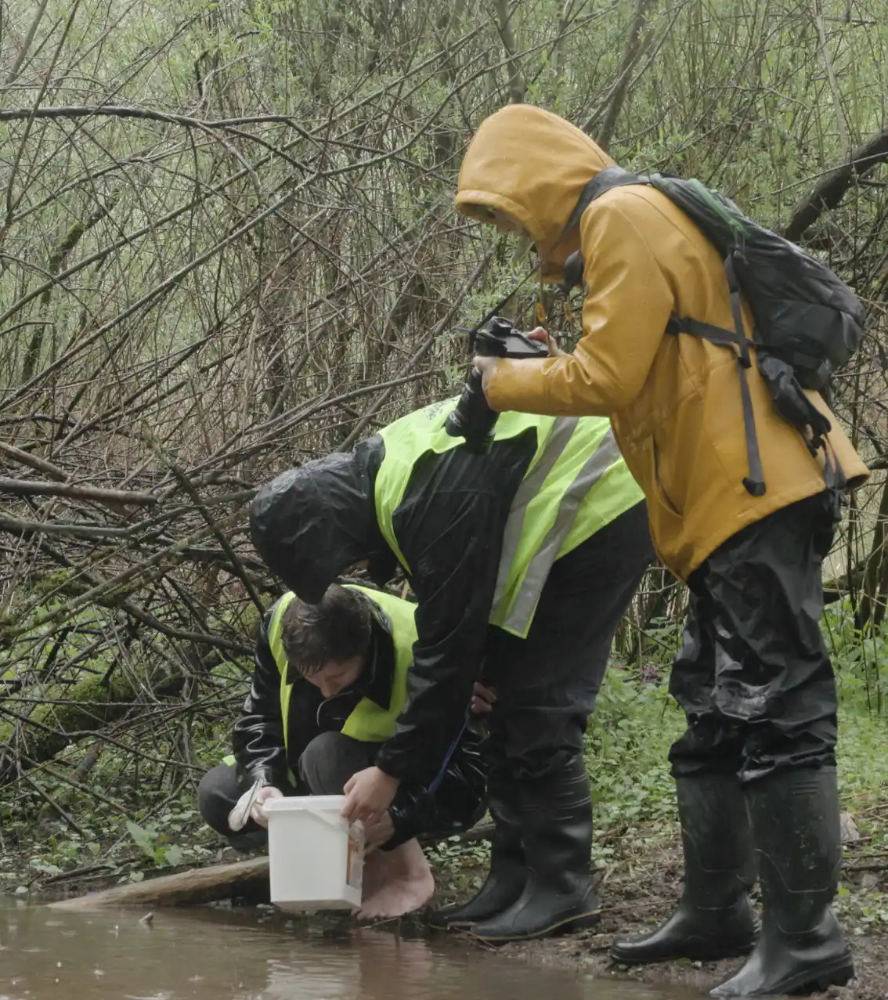
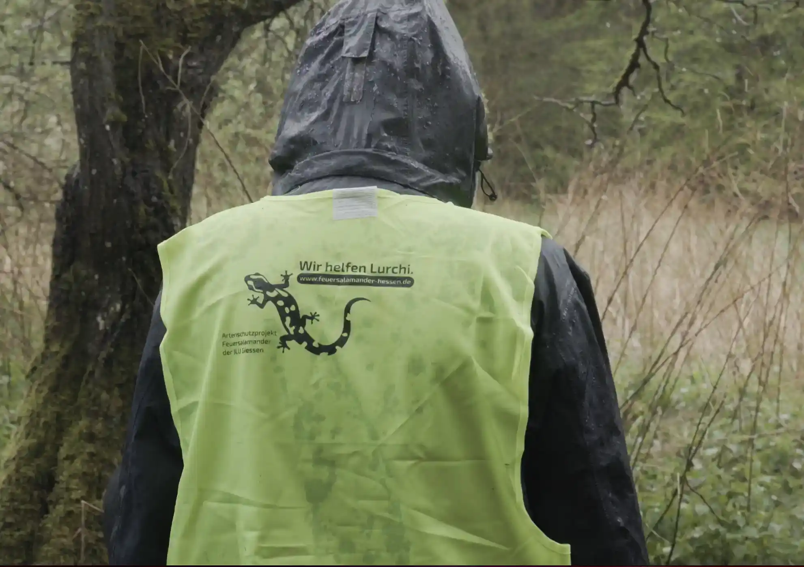
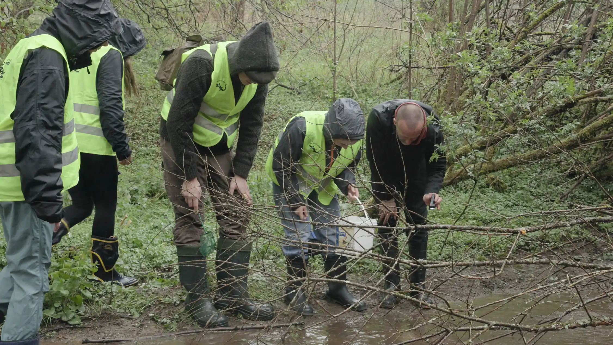

Heute durften wir Schüler*innen der Wilhelm-von-Oranien-Schule bei einer Larvenkartierung begleiten.
Obwohl das Wetter nicht optimal war, konnten sie dennoch drei Larven für ihr Erhaltungszucht-Projekt entnehmen.
Diese werden nun bei einzelnen Schülern zu Hause großgezogen und anschließend gemeinsam wieder ausgewildert.